wages <- read_csv("data/wages.csv")Task 1: Education, wages, and kids
Let’s look once again at the effect of education on earnings. You’ll use data from the 1976 Current Population Survey run by the US Census. The data is available as wage in the wooldridge R package—here I’ve just taken a subset of variables and renamed them. There are three columns:
| Variable name | Description |
|---|---|
wage |
Average hourly earnings (in 1976 dollars) |
education |
Years of education |
n_kids |
Number of dependents living at home |
You’re interested in estimating \(\beta_1\) in:
\[ \text{Wage}_i = \beta_0 + \beta_1 \text{Education}_i + \epsilon_i \]
However, there is an issue with omitted variable bias and endogeneity. Instrumental variables can potentially help address the endogeneity.
Step 1
Load and look at the dataset
Step 2
We need an instrument for education, since part of it is endogenous. Do you think the variable n_kids (the number of children) would be a valid instrument? Does it meet the three requirements of a valid instrument?
Relevance
wages %>%
ggplot(aes(education, wage)) +
geom_smooth(method = lm, color = "#68169E", fill = "#A338EA") +
geom_point(aes(fill = n_kids), color = "#68169E", pch=21, size=3) +
scale_x_continuous(expand = expansion(mult = 0.01, add = 0)) +
scale_y_continuous(expand = expansion(mult = 0.01, add = 0)) +
scale_fill_continuous_sequential(palette = "Purples", l1 = 20, c2 = 70, p1 = 1,
labels = label_number(accuracy = 1)) +
labs(x = "Years of Education",
y = "Hourly Wage",
title = "Education and Wages",
fill = "# of children") +
theme_light() +
theme(legend.position = "bottom",
text = element_text(family = "serif"))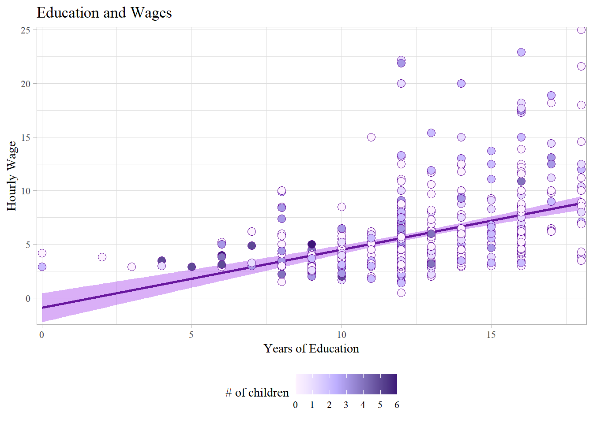
As seen in Figure 1, education does appear to be correlated with wage. The points have been colored to indicated the number of children.
Excudability
wages %>%
ggplot(aes(n_kids, wage)) +
geom_smooth(method = lm, color = "#68169E", fill = "#A338EA") +
geom_point(color = "#68169E", fill = "#A338EA", pch=21, size=2) +
scale_x_continuous(expand = expansion(mult = 0.01, add = 0)) +
scale_y_continuous(expand = expansion(mult = 0.01, add = 0)) +
labs(x = "Number of Children",
y = "Hourly Wage",
title = "Number of Children and Wages") +
theme_light() +
theme(legend.position = "bottom",
text = element_text(family = "serif"))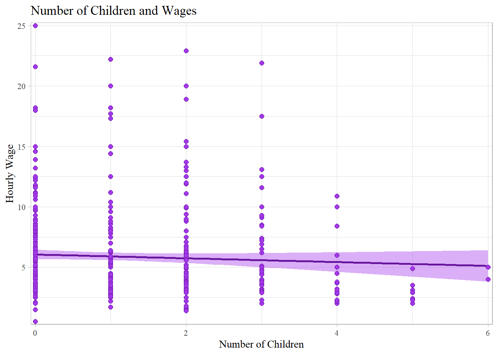
However, according to Figure 2, the number of children is not correlated with wage.
Exogeneity
While we cannot test specifically for exogeneity, it does not seem likely that the number of children someone has would not be influenced both by wage and education, as well as many other factors.
model <- lm(wage ~ education, data = wages)
modelsummary(list("Naive Model" = model),
coef_rename = c(education = "Years of Education"),
gof_omit = "IC|Log|Adj|p\\.value|statistic|se_type",
stars = TRUE) %>%
row_spec(c(1,3,5,7), background = "#8DE4FF")| Naive Model | |
|---|---|
| (Intercept) | −0.902 |
| (0.685) | |
| Years of Education | 0.541*** |
| (0.053) | |
| Num.Obs. | 526 |
| R2 | 0.164 |
| RMSE | 3.37 |
| + p < 0.1, * p < 0.05, ** p < 0.01, *** p < 0.001 |
Explain why it passes or fails each of the three requirements for a valid instrument. Test the requirements where possible using scatterplots and regression.
The only requirement that number of children passes to be a valid instrument is relevance, and that is only between education and wage. Number of children does not appear to have a positive influence on wages (if anything, the influence is negative). As far as exogeneity, there is no way to confirm, but it is not likely that the number of children is not influenced by many other factors.
Step 3
Assume that the number of children is a valid instrument (regardless of whatever you concluded earlier). Using the number of children (n_kids) as an instrument for education (education), estimate the effect of education on wages via two-stage least squares (2SLS) instrumental variables (IV).
Do this by hand: create a first stage model, extract the predicted education, and use predicted education in the second stage.
Interpret the coefficient that gives the effect of education on wages (\(\beta_1\)) and its significance.
first_stage <- lm(education ~ n_kids, data = wages)
wages_predict <- augment_columns(first_stage, wages) %>%
rename(educ_hat = .fitted)
head(wages_predict)# A tibble: 6 × 10
wage education n_kids educ_hat .se.fit .resid .hat .sigma .cooksd .std.…¹
<dbl> <dbl> <dbl> <dbl> <dbl> <dbl> <dbl> <dbl> <dbl> <dbl>
1 3.1 11 2 12.1 0.148 -1.11 0.00299 2.71 2.54e-4 -0.411
2 3.2 12 3 11.6 0.218 0.361 0.00648 2.71 5.85e-5 0.134
3 3 11 2 12.1 0.148 -1.11 0.00299 2.71 2.54e-4 -0.411
4 6 8 0 13.1 0.153 -5.06 0.00320 2.70 5.63e-3 -1.87
5 5.3 12 1 12.6 0.118 -0.583 0.00190 2.71 4.44e-5 -0.216
6 8.8 16 0 13.1 0.153 2.94 0.00320 2.71 1.91e-3 1.09
# … with abbreviated variable name ¹.std.residsecond_stage <- lm(wage ~ educ_hat, data = wages_predict)
tidy(second_stage)# A tibble: 2 × 5
term estimate std.error statistic p.value
<chr> <dbl> <dbl> <dbl> <dbl>
1 (Intercept) 1.71 3.40 0.503 0.615
2 educ_hat 0.333 0.270 1.23 0.218By calculating the expected wage according to how many children, we can use the expected value of education to determine how much of wage is caused by education. As the expected level of education increases, based on the number of children, the expected wage increases by 0.333. However, it is not statistically significant because the p value is .218, well above the .05 cutoff.
(Remember that you can also use the iv_robust() function from the estimatr package to run IV/2SLS models in one step with: iv_robust(y ~ x | z, data = data), where y is the outcome, x is the policy/program, and z is the instrument. Try doing this to check your manual two-stage model.)
model_2sls <- iv_robust(wage ~ education | n_kids, data = wages)
tidy(model_2sls) term estimate std.error statistic p.value conf.low conf.high df
1 (Intercept) 1.7093781 2.8030095 0.6098367 0.5422343 -3.7971383 7.2158945 524
2 education 0.3331669 0.2221214 1.4999318 0.1342343 -0.1031909 0.7695247 524
outcome
1 wage
2 wageStep 4
Run a naive model predicting the effect of education on wages (i.e. without any instruments).
How does this naive model compare with the IV model?
tidy(model)# A tibble: 2 × 5
term estimate std.error statistic p.value
<chr> <dbl> <dbl> <dbl> <dbl>
1 (Intercept) -0.902 0.685 -1.32 1.89e- 1
2 education 0.541 0.0533 10.2 3.09e-22The coefficient for the naive model is much higher and significant at 0.541. However the instrument model is no longer significant and decreased by 0.208, to 0.333.
Show the results side-by-side here:
modelsummary(list("Naive (OLS)" = model,
"2SLS (manual)" = second_stage,
"2SLS (automatic)" = model_2sls),
coef_rename = c(education = "Years of Education",
educ_hat = "Expected Years of Education"),
gof_omit = "IC|Log|Adj|p\\.value|statistic|se_type",
stars = TRUE) %>%
row_spec(c(3, 5), background = "#F5ABEA") %>%
row_spec(c(1, 7, 9), background = "#F9E6EE")| Naive (OLS) | 2SLS (manual) | 2SLS (automatic) | |
|---|---|---|---|
| (Intercept) | −0.902 | 1.709 | 1.709 |
| (0.685) | (3.400) | (2.803) | |
| Years of Education | 0.541*** | 0.333 | |
| (0.053) | (0.222) | ||
| Expected Years of Education | 0.333 | ||
| (0.270) | |||
| Num.Obs. | 526 | 526 | 526 |
| R2 | 0.164 | 0.003 | 0.140 |
| RMSE | 3.37 | 3.69 | 3.42 |
| + p < 0.1, * p < 0.05, ** p < 0.01, *** p < 0.001 |
Step 6
Explain which estimates (OLS vs. IV/2SLS) you would trust more (or why you distrust both).
The IV/2SLS models are more trustworthy than the OLS model because it is less significant and less substantial. Since the logic that more children would increase wages only through education makes no sense, it would be surprising to find a significant correlation. Having more children is most certainly influenced by many factors that also influence education and wages. Education and wages themselves influence the number of children someone might have.
The OLS model is even less trustworthy because it does not take into account any other factors at all. While it may be true that higher education causes higher wages, this model is insufficient to confirm that. Education can be influenced by a number of factors which also influence wages. Neither of these estimates are trustworthy.
Task 2: Public housing and health
Economic research shows that there is a potential (albeit weak) connection between health outcomes and residency in public housing. You are interested in finding the effect of public housing assistance on health outcomes. In the absence of experimental data, you must use observational data collected by the Georgia Department of Public Health. You have access to a dataset of 1,000 rows with the following columns:
| Variable name | Description |
|---|---|
HealthStatus |
Health status on a scale from 1 = poor to 20 = excellent |
HealthBehavior |
Omitted variable (you can’t actually measure this!) |
PublicHousing |
Number of years spent in public housing |
Supply |
Number of available public housing units in the city per 100 eligible households |
ParentsHealthStatus |
Health status of parents on a scale from 1 = poor to 20 = excellent |
WaitingTime |
Average waiting time before obtaining public housing in the city (in months) |
Stamp |
Dollar amount of food stamps (SNAP) spent each month |
Age |
Age |
Race |
Race; 1 = White, 2 = Black, 3 = Hispanic, 4 = Other |
Education |
Education; 1 = Some high school, 2 = High school, 3 = Bachelor’s, 4 = Master’s |
MaritalStatus |
Marital status; 1 = Single, 2 = Married, 3 = Widow, 4 = Divorced |
(This is simulated data, but it’s based on analysis by Angela R. Fertig and David A. Reingold)
Your goal is to measure the effect of living in public housing (PublicHousing) on health (HealthStatus). There is omitted variable bias, though, since people who care more about their health might be more likely to self-select into public housing and report a better health status score. The magic variable HealthBehavior measures this omitted variable, and you can use it as reference to make sure you get the models right (this is the same as “ability” in the examples in class), but don’t include it in any of your actual models, since it’s not real.
This data includes four potential instruments:
Supply: Number of available public housing units in the city per 100 eligible householdsParentsHealthStatus: Health status of parents on a scale from 1 = poor to 5 = excellentWaitingTime: Average waiting time before obtaining public housing in the city (in months)Stamp: Dollar amount of food stamps (SNAP) spent each month
You have three tasks:
Evaluate
- Evaluate the suitability of each of the four potential instruments.
# problem-set-7/problem-set-7/
housing <- read_csv("data/public_housing.csv")Supply
Relavance
Check if they (1) have relevance with a scatterplot and model and F-test,
housing %>%
ggplot(aes(PublicHousing, HealthStatus)) +
geom_point(aes(fill = Supply), color = "#68169E", pch=21, size=3) +
geom_smooth(method = lm, color = "#68169E", fill = "#A338EA") +
scale_x_continuous(expand = expansion(mult = 0.01, add = 0)) +
scale_y_continuous(expand = expansion(mult = 0.01, add = 0)) +
scale_fill_continuous_sequential(palette = "Purples", l1 = 20, c2 = 70, p1 = 1,
labels = label_number(accuracy = 1)) +
labs(x = "Number of Years in Public Housing",
y = "Health status (1 = poor, 20 = excellent)",
title = "Public Housing and Health Status",
fill = "Supply") +
theme_light() +
theme(legend.position = "bottom",
text = element_text(family = "serif"))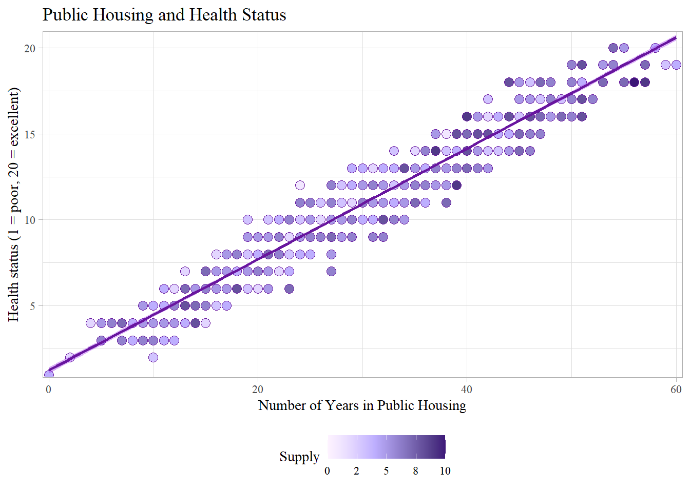
supply <- lm(HealthStatus ~ Supply, data = housing)
tidy(supply)# A tibble: 2 × 5
term estimate std.error statistic p.value
<chr> <dbl> <dbl> <dbl> <dbl>
1 (Intercept) 10.2 0.357 28.6 5.22e-132
2 Supply 0.190 0.0676 2.81 5.01e- 3glance(supply)# A tibble: 1 × 12
r.squ…¹ adj.r…² sigma stati…³ p.value df logLik AIC BIC devia…⁴ df.re…⁵
<dbl> <dbl> <dbl> <dbl> <dbl> <dbl> <dbl> <dbl> <dbl> <dbl> <int>
1 0.00786 0.00687 3.45 7.91 0.00501 1 -2658. 5321. 5336. 11911. 998
# … with 1 more variable: nobs <int>, and abbreviated variable names
# ¹r.squared, ²adj.r.squared, ³statistic, ⁴deviance, ⁵df.residualFAILED - Okay on relevance, but low f statistic.
Excudability
- meet the excludability assumption, and
housing %>%
ggplot(aes(Supply, HealthStatus)) +
geom_point(fill = "#68169E", pch=21, size=2) +
geom_smooth(method = lm, color = "#68169E", fill = "#A338EA") +
scale_x_continuous(expand = expansion(mult = 0.01, add = 0),
labels = label_number(accuracy = 1)) +
scale_y_continuous(expand = expansion(mult = 0.01, add = 0)) +
labs(x = "Supply",
y = "Health status (1 = poor, 20 = excellent)",
title = "Supply and Health Status") +
theme_light() +
theme(legend.position = "bottom",
text = element_text(family = "serif"))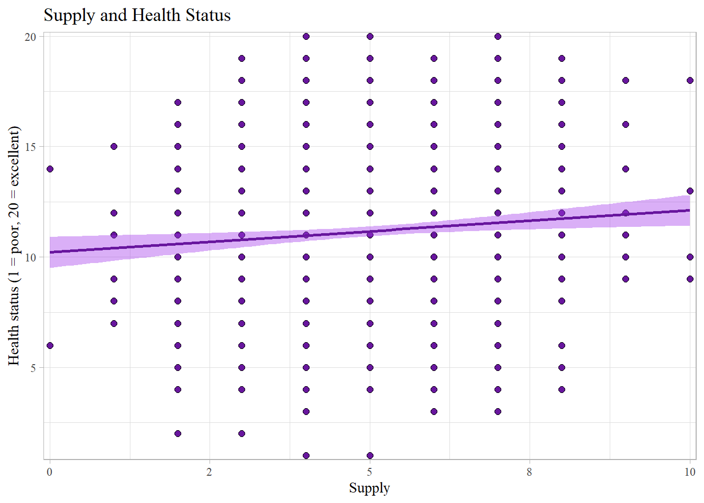
FAILED - The slope is relatively flat so there may be other ways that supply influences health status.
Exogeneity
- meet the exogeneity assumption.
housing %>%
ggplot(aes(HealthBehavior, Supply)) +
geom_point(fill = "#68169E", pch=21, size=2) +
geom_smooth(method = lm, color = "#68169E", fill = "#A338EA") +
scale_x_continuous(expand = expansion(mult = 0.01, add = 0)) +
scale_y_continuous(expand = expansion(mult = 0.01, add = 0),
labels = label_number(accuracy = 1)) +
labs(x = "Health Behavior",
y = "Supply",
title = "Health Behavior and Supply") +
theme_light() +
theme(legend.position = "bottom",
text = element_text(family = "serif"))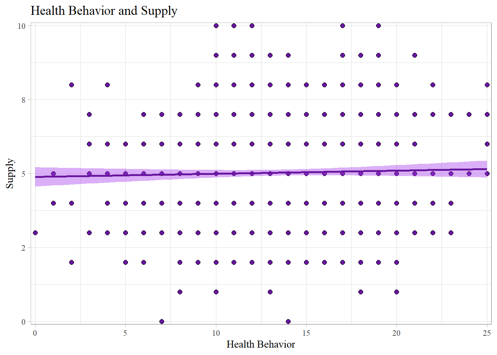
PASSED! - Health behavior is not correlated with supply.
Parents Health Status
Relavance
housing %>%
ggplot(aes(PublicHousing, HealthStatus)) +
geom_point(aes(fill = ParentsHealthStatus), color = "#68169E", pch=21, size=3) +
geom_smooth(method = lm, color = "#68169E", fill = "#A338EA") +
scale_x_continuous(expand = expansion(mult = 0.01, add = 0)) +
scale_y_continuous(expand = expansion(mult = 0.01, add = 0)) +
scale_fill_continuous_sequential(palette = "Purples", l1 = 20, c2 = 70, p1 = 1) +
labs(x = "Number of Years in Public Housing",
y = "Health status (1 = poor, 20 = excellent)",
title = "Public Housing and Health Status",
fill = "Parents Health Status") +
theme_light() +
theme(legend.position = "bottom",
text = element_text(family = "serif"))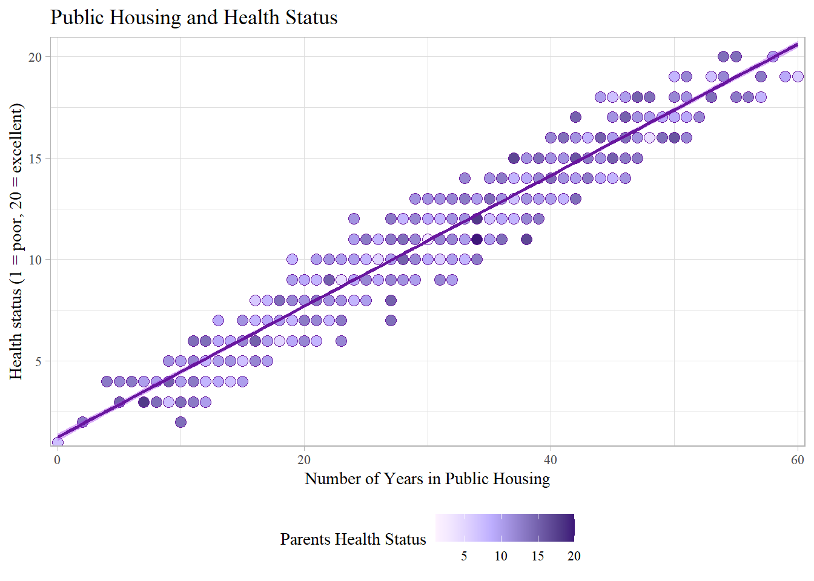
parents <- lm(HealthStatus ~ ParentsHealthStatus, data = housing)
tidy(parents)# A tibble: 2 × 5
term estimate std.error statistic p.value
<chr> <dbl> <dbl> <dbl> <dbl>
1 (Intercept) 10.1 0.429 23.4 4.26e-97
2 ParentsHealthStatus 0.0995 0.0373 2.67 7.79e- 3glance(parents)# A tibble: 1 × 12
r.squ…¹ adj.r…² sigma stati…³ p.value df logLik AIC BIC devia…⁴ df.re…⁵
<dbl> <dbl> <dbl> <dbl> <dbl> <dbl> <dbl> <dbl> <dbl> <dbl> <int>
1 0.00707 0.00608 3.46 7.11 0.00779 1 -2658. 5322. 5337. 11921. 998
# … with 1 more variable: nobs <int>, and abbreviated variable names
# ¹r.squared, ²adj.r.squared, ³statistic, ⁴deviance, ⁵df.residualFAILED - Okay on relevance, but low f statistic.
Excudability
- meet the excludability assumption, and
housing %>%
ggplot(aes(ParentsHealthStatus, HealthStatus)) +
geom_point(fill = "#68169E", pch=21, size=2) +
geom_smooth(method = lm, color = "#68169E", fill = "#A338EA") +
scale_x_continuous(expand = expansion(mult = 0.01, add = 0)) +
scale_y_continuous(expand = expansion(mult = 0.01, add = 0)) +
labs(x = "Parents Health Status",
y = "Health status (1 = poor, 20 = excellent)",
title = "Parents Health Status and Health Status") +
theme_light() +
theme(legend.position = "bottom",
text = element_text(family = "serif"))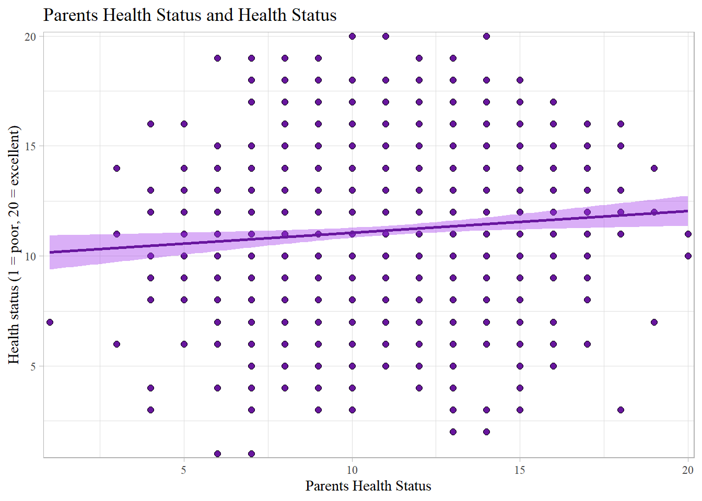
FAILED - The slope is relatively flat so there may be other ways that supply influences health status.
Exogeneity
- meet the exogeneity assumption.
housing %>%
ggplot(aes(HealthBehavior, ParentsHealthStatus)) +
geom_point(fill = "#68169E", pch=21, size=2) +
geom_smooth(method = lm, color = "#68169E", fill = "#A338EA") +
scale_x_continuous(expand = expansion(mult = 0.01, add = 0)) +
scale_y_continuous(expand = expansion(mult = 0.01, add = 0)) +
labs(x = "Health Behavior",
y = "Parents Health Status",
title = "Health Behavior and Parents Health Status") +
theme_light() +
theme(legend.position = "bottom",
text = element_text(family = "serif"))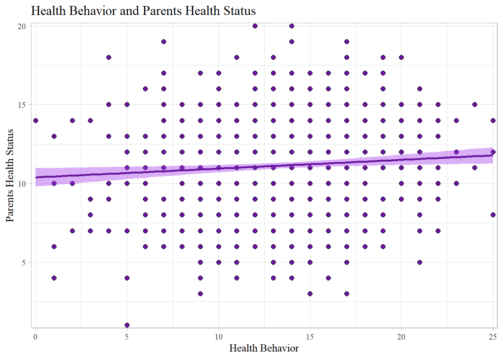
FAILED - Though it is not extreme, there is a bit of upward slope indicating a possible correlation between health behavior and parents health status.
Waiting Time
Relavance
housing %>%
ggplot(aes(PublicHousing, HealthStatus)) +
geom_point(aes(fill = WaitingTime), color = "#68169E", pch=21, size=3) +
geom_smooth(method = lm, color = "#68169E", fill = "#A338EA") +
scale_x_continuous(expand = expansion(mult = 0.01, add = 0)) +
scale_y_continuous(expand = expansion(mult = 0.01, add = 0)) +
scale_fill_continuous_sequential(palette = "Purples", l1 = 20, c2 = 70, p1 = 1) +
labs(x = "Number of Years in Public Housing",
y = "Health status (1 = poor, 20 = excellent)",
title = "Public Housing and Health Status",
fill = "Waiting Time") +
theme_light() +
theme(legend.position = "bottom",
text = element_text(family = "serif"))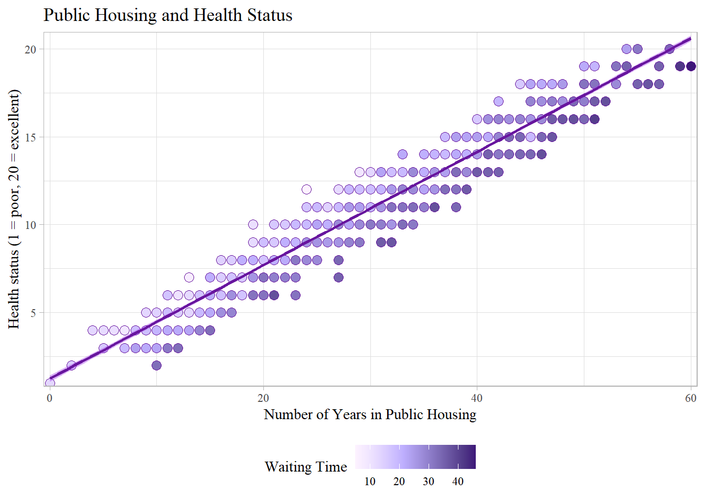
wait <- lm(HealthStatus ~ WaitingTime, data = housing)
tidy(wait)# A tibble: 2 × 5
term estimate std.error statistic p.value
<chr> <dbl> <dbl> <dbl> <dbl>
1 (Intercept) 5.85 0.426 13.7 2.26e-39
2 WaitingTime 0.213 0.0165 12.9 3.55e-35glance(wait)# A tibble: 1 × 12
r.squared adj.r.squa…¹ sigma stati…² p.value df logLik AIC BIC devia…³
<dbl> <dbl> <dbl> <dbl> <dbl> <dbl> <dbl> <dbl> <dbl> <dbl>
1 0.142 0.141 3.21 166. 3.55e-35 1 -2585. 5176. 5190. 10297.
# … with 2 more variables: df.residual <int>, nobs <int>, and abbreviated
# variable names ¹adj.r.squared, ²statistic, ³deviancePASSED! - High relevance and high f statistic.
Excudability
- meet the excludability assumption, and
housing %>%
ggplot(aes(WaitingTime, HealthStatus)) +
geom_point(fill = "#68169E", pch=21, size=2) +
geom_smooth(method = lm, color = "#68169E", fill = "#A338EA") +
scale_x_continuous(expand = expansion(mult = 0.01, add = 0)) +
scale_y_continuous(expand = expansion(mult = 0.01, add = 0)) +
labs(x = "Waiting Time",
y = "Health status (1 = poor, 20 = excellent)",
title = "Waiting Time and Health Status") +
theme_light() +
theme(legend.position = "bottom",
text = element_text(family = "serif"))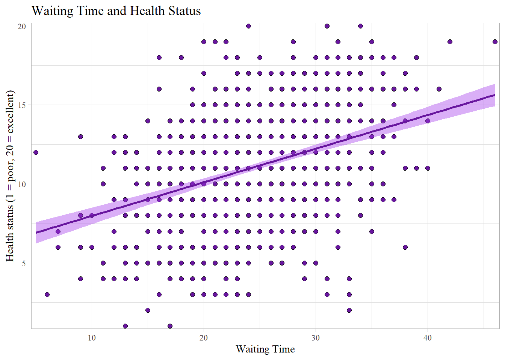
PASSED! - The slope is substantial in a positive direction. There is a significant correlation between waiting time and health status.
Exogeneity
- meet the exogeneity assumption.
housing %>%
ggplot(aes(HealthBehavior, WaitingTime)) +
geom_point(fill = "#68169E", pch=21, size=2) +
geom_smooth(method = lm, color = "#68169E", fill = "#A338EA") +
scale_x_continuous(expand = expansion(mult = 0.01, add = 0)) +
scale_y_continuous(expand = expansion(mult = 0.01, add = 0)) +
labs(x = "Health Behavior",
y = "Waiting Time",
title = "Health Behavior and Waiting Time") +
theme_light() +
theme(legend.position = "bottom",
text = element_text(family = "serif"))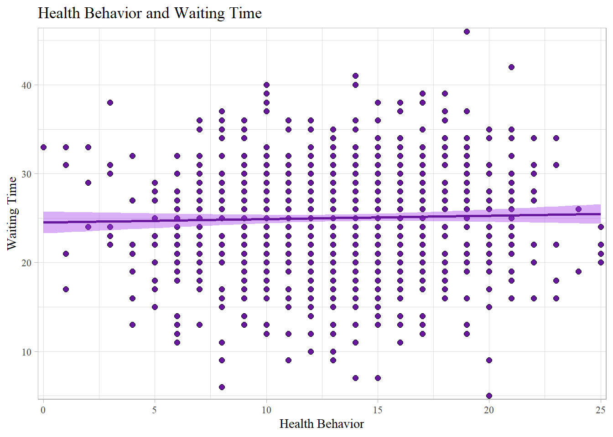
PASSED! - Health behavior is not correlated with waiting time.
SNAP benefits
Relavance
housing %>%
ggplot(aes(PublicHousing, HealthStatus)) +
geom_point(aes(fill = Stamp), color = "#68169E", pch=21, size=3) +
geom_smooth(method = lm, color = "#68169E", fill = "#A338EA") +
scale_x_continuous(expand = expansion(mult = 0.01, add = 0)) +
scale_y_continuous(expand = expansion(mult = 0.01, add = 0)) +
scale_fill_continuous_sequential(palette = "Purples", l1 = 20, c2 = 70, p1 = 1,
labels = dollar) +
labs(x = "Number of Years in Public Housing",
y = "Health status (1 = poor, 20 = excellent)",
title = "Public Housing and Health Status",
fill = "SNAP benefits") +
theme_light() +
theme(legend.position = "bottom",
text = element_text(family = "serif"))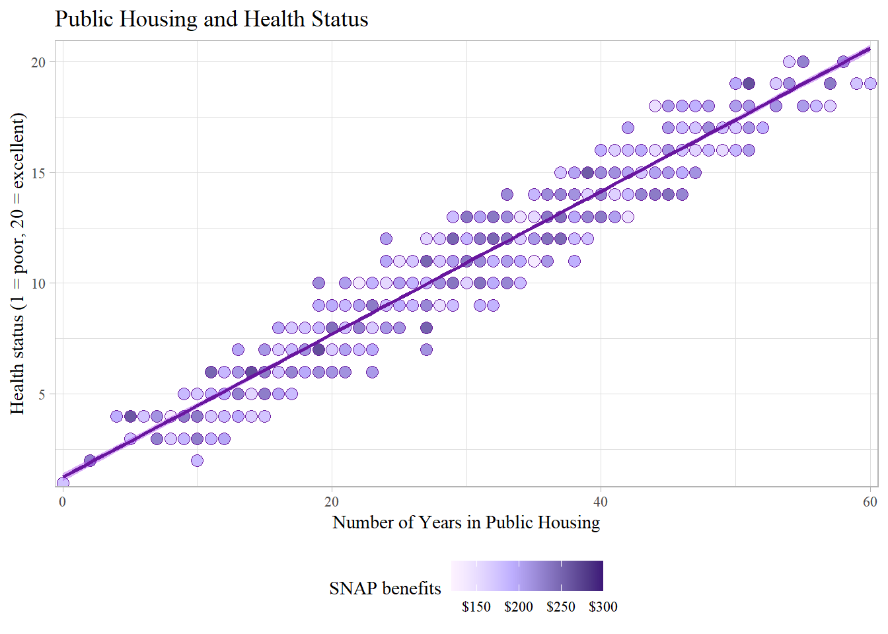
SNAP <- lm(HealthStatus ~ Stamp, data = housing)
tidy(SNAP)# A tibble: 2 × 5
term estimate std.error statistic p.value
<chr> <dbl> <dbl> <dbl> <dbl>
1 (Intercept) 11.5 0.795 14.4 4.67e-43
2 Stamp -0.00157 0.00399 -0.393 6.95e- 1glance(SNAP)# A tibble: 1 × 12
r.squared adj.r.squared sigma stati…¹ p.value df logLik AIC BIC devia…²
<dbl> <dbl> <dbl> <dbl> <dbl> <dbl> <dbl> <dbl> <dbl> <dbl>
1 0.000154 -0.000847 3.47 0.154 0.695 1 -2662. 5329. 5344. 12004.
# … with 2 more variables: df.residual <int>, nobs <int>, and abbreviated
# variable names ¹statistic, ²devianceFAILED - Low relevance and very low f statistic.
Excudability
- meet the excludability assumption, and
housing %>%
ggplot(aes(Stamp, HealthStatus)) +
geom_point(fill = "#68169E", pch=21, size=2) +
geom_smooth(method = lm, color = "#68169E", fill = "#A338EA") +
scale_x_continuous(expand = expansion(mult = 0.01, add = 0),
labels = dollar) +
scale_y_continuous(expand = expansion(mult = 0.01, add = 0)) +
labs(x = "SNAP benefits",
y = "Health status (1 = poor, 20 = excellent)",
title = "SNAP benefits and Health Status") +
theme_light() +
theme(legend.position = "bottom",
text = element_text(family = "serif"))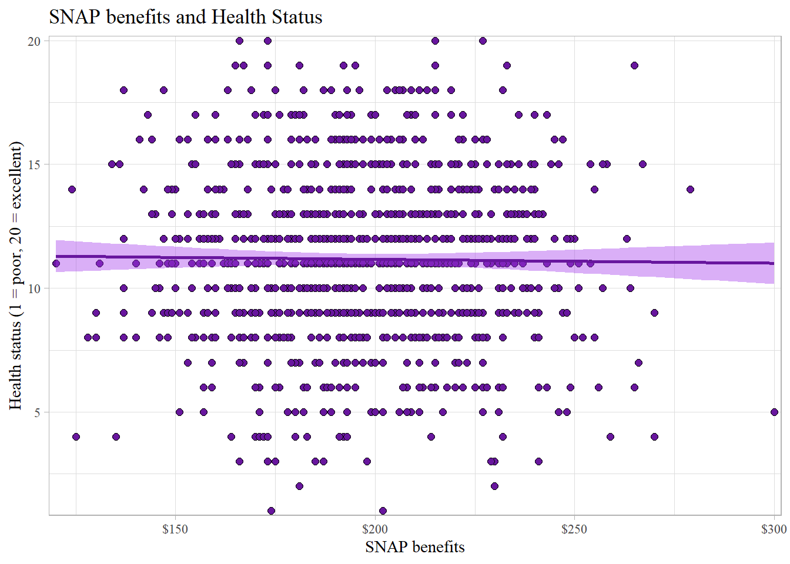
FAILED - The slope is almost completely flat so there may be other ways that supply influences health status.
Exogeneity
- meet the exogeneity assumption.
housing %>%
ggplot(aes(HealthBehavior, Stamp)) +
geom_point(fill = "#68169E", pch=21, size=2) +
geom_smooth(method = lm, color = "#68169E", fill = "#A338EA") +
scale_x_continuous(expand = expansion(mult = 0.01, add = 0)) +
scale_y_continuous(expand = expansion(mult = 0.01, add = 0),
labels = dollar) +
labs(x = "Health Behavior",
y = "SNAP benefits",
title = "Health Behavior and SNAP benefits") +
theme_light() +
theme(legend.position = "bottom",
text = element_text(family = "serif"))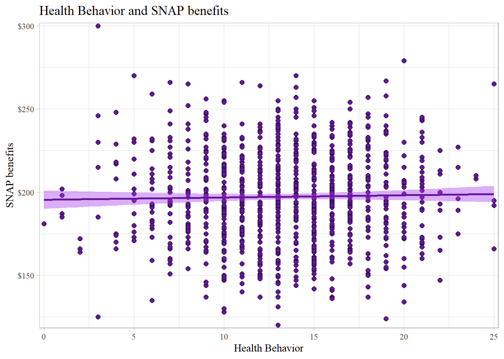
PASSED! - Health behavior is not correlated with SNAP benefits.
Choose one of these as your main instrument and justify why it’s the best. Explain why the other three are not.
| Instrument | Relevance | Excudability | Exogeneity |
|---|---|---|---|
Supply |
FAIL | FAIL | PASS |
ParentsHealthStatus |
FAIL | FAIL | FAIL |
WaitingTime |
PASS | PASS | PASS |
Stamp |
FAIL | FAIL | PASS |
The obvious choice here for an instrument would be waiting time. It is the only variable that fulfills all three requirements. None of the other three variables even pass the relevance and excudability tests, let alone exogeneity which would not actually be testable in a real world situation.
Naive Model
- Estimate a naive model of the effect of public housing on health status (i.e. without any instruments). You can include any control variables you feel appropriate (i.e. that fit in your causal model). If you use variables that are categorical like race, education, or marital status, make sure you wrap them with
as.factor()to treat them as categories instead of numbers (e.g.as.factor(education)).
modelh <- lm(HealthStatus ~ PublicHousing, data = housing)
modelh2 <- lm(HealthStatus ~ PublicHousing +
Age + as.factor(Race) + as.factor(Education) + as.factor(MaritalStatus),
data = housing)
modelsummary(list("Naive Model" = modelh,
"Naive + Controls" = modelh2),
coef_omit = c(-1, -2),
coef_rename = c(PublicHousing = "Years in Public Housing"),
gof_omit = "IC|Log|Adj|p\\.value|statistic|se_type",
stars = TRUE) %>%
row_spec(c(1,3,5,7), background = "#8DE4FF")| Naive Model | Naive + Controls | |
|---|---|---|
| (Intercept) | 1.254*** | −1.197*** |
| (0.088) | (0.226) | |
| Years in Public Housing | 0.322*** | 0.321*** |
| (0.003) | (0.003) | |
| Num.Obs. | 1000 | 1000 |
| R2 | 0.933 | 0.943 |
| RMSE | 0.89 | 0.82 |
| + p < 0.1, * p < 0.05, ** p < 0.01, *** p < 0.001 |
2SLS IV Model
- Estimate the effect of public housing on health status using 2SLS IV. You can use
iv_robust()to do it all in one step if you want (but you’ll still need to run a first-stage model to find the F statistic). Compare the results with the naive model.
first_stage2 <- lm(PublicHousing ~ WaitingTime, data = housing)
health_predict <- augment_columns(first_stage2, housing) %>%
rename(public_hat = .fitted) %>%
select(PublicHousing, WaitingTime, public_hat, HealthStatus)
head(health_predict)# A tibble: 6 × 4
PublicHousing WaitingTime public_hat HealthStatus
<dbl> <dbl> <dbl> <dbl>
1 22 19 25.1 10
2 32 34 39.3 11
3 31 35 40.3 10
4 33 18 24.1 13
5 38 35 40.3 12
6 30 17 23.2 12second_stage2 <- lm(HealthStatus ~ public_hat, data = health_predict)
tidy(second_stage2)# A tibble: 2 × 5
term estimate std.error statistic p.value
<chr> <dbl> <dbl> <dbl> <dbl>
1 (Intercept) 4.28 0.545 7.85 1.04e-14
2 public_hat 0.224 0.0174 12.9 3.55e-35model_2sls2 <- iv_robust(HealthStatus ~ PublicHousing | WaitingTime,
data = housing)
tidy(model_2sls2) term estimate std.error statistic p.value conf.low
1 (Intercept) 4.2804039 0.235296328 18.19155 4.375792e-64 3.8186716
2 PublicHousing 0.2239024 0.007555483 29.63442 5.842195e-139 0.2090759
conf.high df outcome
1 4.7421362 998 HealthStatus
2 0.2387288 998 HealthStatusforbidden <- lm(HealthStatus ~ PublicHousing + HealthBehavior,
data = housing)
model_2sls_supply <- iv_robust(HealthStatus ~ PublicHousing | Supply,
data = housing)
model_2sls_parents <- iv_robust(HealthStatus ~ PublicHousing | ParentsHealthStatus,
data = housing)
model_2sls_SNAP <- iv_robust(HealthStatus ~ PublicHousing | Stamp,
data = housing)
modelsummary(list("Waiting Time" = model_2sls2,
"Supply" = model_2sls_supply,
"Parents Health" = model_2sls_parents,
"SNAP benefits" = model_2sls_SNAP,
"Forbidden" = forbidden),
coef_rename = c(PublicHousing = "Years in Public Housing"),
gof_omit = "IC|Log|Adj|p\\.value|statistic|se_type",
stars = TRUE) %>%
row_spec(c(3), background = "#F5ABEA") %>%
row_spec(c(1, 5, 7), background = "#F9E6EE") %>%
column_spec(2:6, width = "4em")| Waiting Time | Supply | Parents Health | SNAP benefits | Forbidden | |
|---|---|---|---|---|---|
| (Intercept) | 4.280*** | 3.152*** | −0.179 | 1.936 | 0.555*** |
| (0.235) | (0.929) | (1.217) | (6.258) | (0.064) | |
| Years in Public Housing | 0.224*** | 0.261*** | 0.369*** | 0.300 | 0.229*** |
| (0.008) | (0.030) | (0.040) | (0.203) | (0.003) | |
| HealthBehavior | 0.268*** | ||||
| (0.008) | |||||
| Num.Obs. | 1000 | 1000 | 1000 | 1000 | 1000 |
| R2 | 0.847 | 0.899 | 0.914 | 0.929 | 0.969 |
| RMSE | 1.36 | 1.10 | 1.02 | 0.92 | 0.61 |
| + p < 0.1, * p < 0.05, ** p < 0.01, *** p < 0.001 |
All Models
modelsummary(list("Naive (OLS)" = modelh,
"Naive + Controls (OLS)" = modelh2,
"2SLS (manual)" = second_stage2,
"2SLS (automatic)" = model_2sls2,
"Forbidden" = forbidden),
coef_omit = c(-1, -2, -13, -14),
coef_rename = c(PublicHousing = "Years in Public Housing",
public_hat = "Expected Years in Public Housing"),
gof_omit = "IC|Log|Adj|p\\.value|statistic|se_type",
stars = TRUE) %>%
row_spec(c(3, 5), background = "#F5ABEA") %>%
row_spec(c(1, 7, 9, 11), background = "#F9E6EE") %>%
column_spec(1, width = "8em") %>%
column_spec(2:6, width = "5em")| Naive (OLS) | Naive + Controls (OLS) | 2SLS (manual) | 2SLS (automatic) | Forbidden | |
|---|---|---|---|---|---|
| (Intercept) | 1.254*** | −1.197*** | 4.280*** | 4.280*** | 0.555*** |
| (0.088) | (0.226) | (0.545) | (0.235) | (0.064) | |
| Years in Public Housing | 0.322*** | 0.321*** | 0.224*** | 0.229*** | |
| (0.003) | (0.003) | (0.008) | (0.003) | ||
| Expected Years in Public Housing | 0.224*** | ||||
| (0.017) | |||||
| HealthBehavior | 0.268*** | ||||
| (0.008) | |||||
| Num.Obs. | 1000 | 1000 | 1000 | 1000 | 1000 |
| R2 | 0.933 | 0.943 | 0.142 | 0.847 | 0.969 |
| RMSE | 0.89 | 0.82 | 3.21 | 1.36 | 0.61 |
| + p < 0.1, * p < 0.05, ** p < 0.01, *** p < 0.001 |
Which model do you trust (if any), and why?
While the naive model is significant, even when controlling for other factors, there are still unobserved variables that could be influencing health and housing. By using waiting time as an instrument, we assume that wait time for a public housing unit influences health outcomes only through housing. We can assume that wait time does not influence health behavior because people waiting for public housing are not fundamentally different from people already in public housing in regard to their health behavior. If our assumptions are correct, if follows logically, that the direct impact of public housing on health outcomes is significant and positive. For each additional year in public housing, using wait time as an instrument, health status is expected to increase 0.224. Though these are assumptions we would usually not be able to prove, the forbidden model shows that the “actual” causal effect of public housing on health outcomes is 0.229. This is only a 0.005 difference.